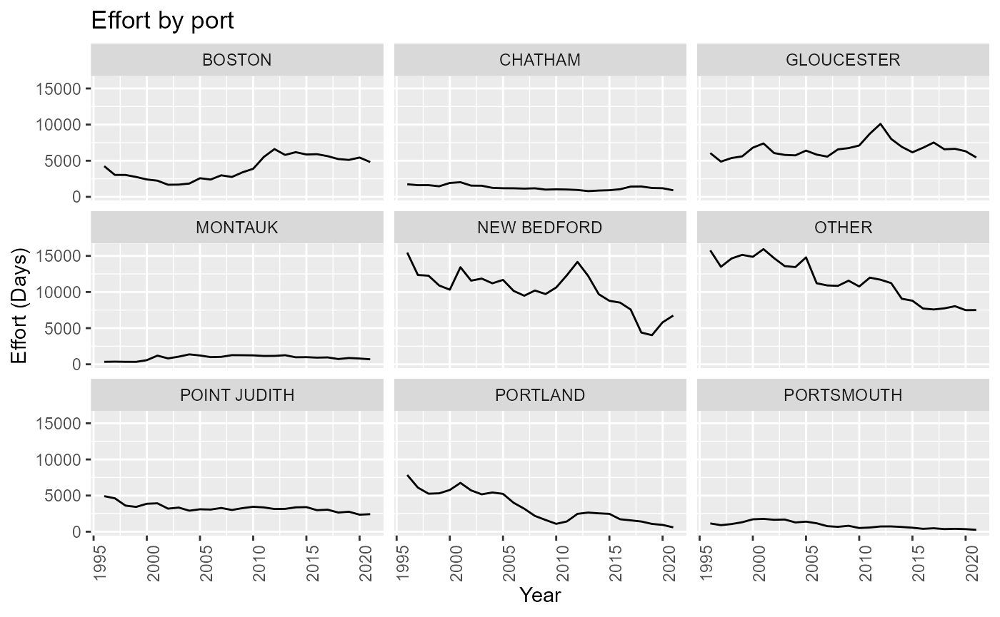
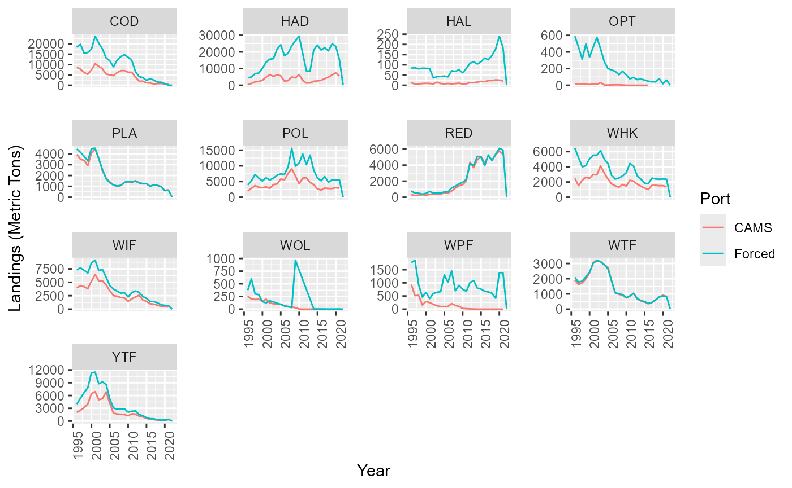

groundfishLandEffort.RmdThe NE multispecies (Groundfish) FMP comprises the following species:
Non target species
These GEARCAT(s) associated with groundfish species are:
** Still need to separate some species (sharks) **
The effort variable is Days at sea (DAS) and is a crude metric. Only integer values and rounded up to the nearest whole day. It is the length of the trip.
After aggregating the top ports based on the decisions found in this section {#sel} and combining all remaining ports into an “other fleet” we can look at the total effort by fleet in units: days at sea

Partition effort by box.
Note: In atlantis effort is entered as as daily effort (days of effort per day). This equates to dividing the annual effort by 365 days.
Compare landings used to force model with landings obtained from CAMS for groundfish fleets. Note: OPT - ocean pout, WOL - wolfish, WPF - windowpane flounder are not target species. Additional catch accounted for by other non groundfish trips
#> Getting info for: total_catch_fleets.ts